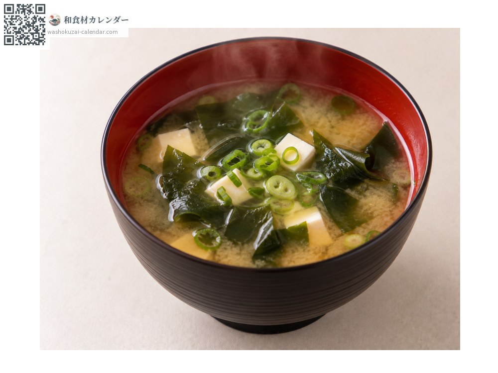
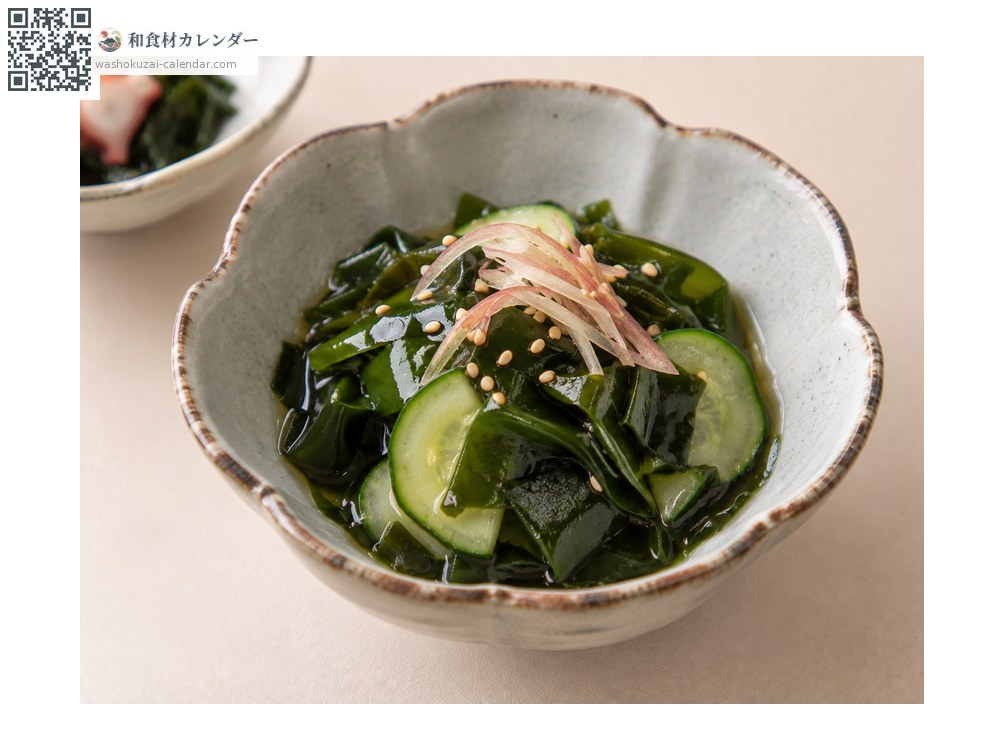
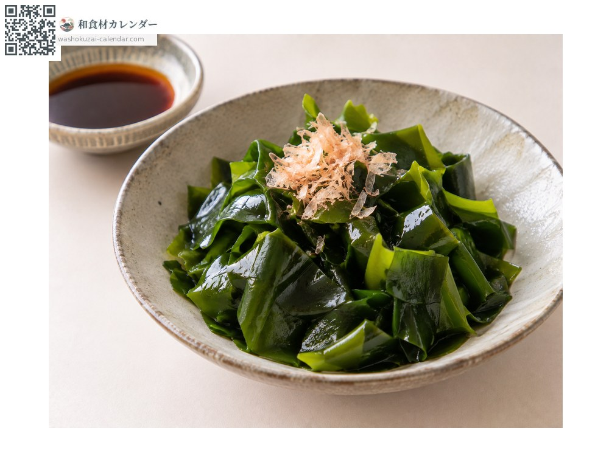
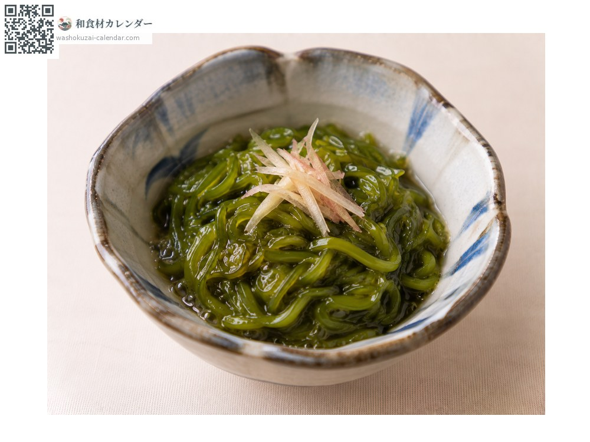

魚介
ワカメ
わかめ
別名・別表記若布、和布、wakame
旬は3月・4月・5月

旬の時期
1月
2月
3月
4月
5月
6月
7月
8月
9月
10月
11月
12月
旬出回り
調理法

味噌汁
定番。戻しすぎないよう注意。

酢の物
きゅうりと合わせて。

しゃぶしゃぶ
生わかめをさっと湯通し。鮮やかな緑になる。

めかぶ
根元をたたいて粘りを出す。
選び方
生は色が濃く、ぬめりがあるもの。乾燥品は黒々として艶があるもの。
保存方法
生は塩蔵にすると日持ちする。乾燥品は密閉して常温保存。
主な産地
豆知識
三陸産と鳴門産が二大産地。鳴門わかめは激しい潮流で育ち、歯ごたえが強いとされる。